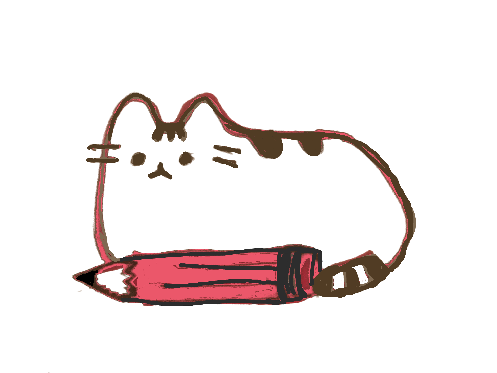

Pusheen Pixel Art Maker

Demo
An interactive grid that users can color, or use a modular-based function to let Pusheen "paint" the grid for them
Written in HTML, CSS, JS
My name is Maria and I'm a seasoned "wearer of many hats." Over the last 3 years, I've been everything from the sole tech support person for a 50k user app, to an operations manager, and a project manager. I believe all products are iterative. I devote my time to this pursuit: developing products and features that grow with their end-user.
Initially I worked as the sole support person managing all tasks from bug documentation to user support for our appand website. I am transitioning into a role where I will be working closely with a product developer to design and implement one of our main products, "Challenges." This work will involve user research, market analysis, and extensive research into app gamification.
Nov 2015 - Current
I am managing the redesign of Code for Philly's chapter website. Code for Philly is a non-profit focused on helping citizens create and maintain open source civically-minded projects. Project tasks include moving the site to Bootstrap 4, creating a managing the oranizations' newsletter, and a UX redesign and content audit to improve accessibility and site architecture.
Nov 2017 - Current
An interactive grid that users can color, or use a modular-based function to let Pusheen "paint" the grid for them
Written in HTML, CSS, JS
An "animal trading card" made for Grow With Google.
Written in HTML, CSS